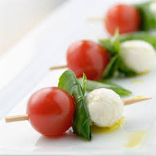

Caprese Tomato on a Stick

Description
Tomato caprese is a great fit for summer outings.
Thread a tomato half, a small piece of basil leaf, and a mozzarella ball onto toothpicks until all ingredients are used. Drizzle the olive oil over the tomato, cheese and basil, leaving the end of the toothpick clean. Sprinkle with salt and pepper. Serve immediately.
Ingredients
- 1 pint cherry tomatoes, halved
- 1 (.6 ounce) package fresh basil leaves
- 1 (16 ounce) package small fresh mozzarella balls
- toothpicks
- 3 tablespoons olive oil
- salt and pepper to taste
Steps
- Thread a tomato half, a small piece of basil leaf, and a mozzarella ball onto toothpicks until all ingredients are used.
- Drizzle the olive oil over the tomato, cheese and basil, leaving the end of the toothpick clean.
- Sprinkle with salt and pepper. Serve immediately.